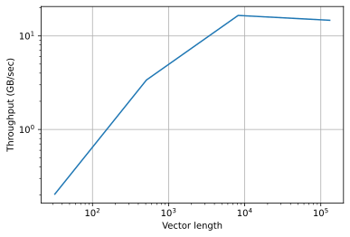
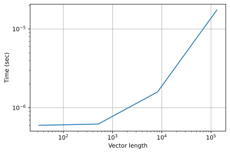

函数调用的开销#
从本章开始对各种调度进行基准测试。在深入研究各种执行时间之前，需要知道在 Python 中发出函数调用的开销（overhead）。众所周知，Python 并不是地球上最快的语言。用 Python 创建原型很快，但也需要付出代价，因为 Python 在钩子下做了聪明的事情。在本节中，将研究在 Python 中调用函数的开销，并演示它对我们以后的基准测试结果的影响。
度量执行时间#
在 Python 中，经常使用 timeit 模块对工作负载进行基准测试，特别是当它的执行时间远远小于 1 秒时。请注意，Jupyter 有个神奇的内置函数 %timeit 更简单，但使用它的函数不能被保存以供将来使用，所以我们将直接使用 timeit。
import timeit
import numpy as np
from matplotlib import pyplot as plt
from IPython import display
以下代码返回创建 [4, 4] 零矩阵 10 次的执行时间。
timer = timeit.Timer(setup='import numpy as np',
stmt='np.zeros((4, 4))')
timer.timeit(10)
1.3149343430995941e-05
可以看到，上述工作负载可以在几十微秒内完成，可能需要增加重复的数量，以获得相对准确的执行时间。下面的函数将确定运行工作负载至少 1 秒所需的重复次数，然后返回平均执行时间。
# 保存到 d2ltvm
def bench_workload(workload):
"""Benchmark a workload
workload: a method that accept a num_repeat argument
and return its total execution time
"""
workload(1) # warmup
time = workload(1) # the time to run once
if time > 1: return time
# The number of repeats to measure at least 1 second
num_repeats = max(int(1.0 / time), 5)
return workload(num_repeats) / num_repeats
print(f'time for np.zeros((4, 4)): {bench_workload(timer.timeit)}')
time for np.zeros((4, 4)): 1.9027240386586985e-07
We can see that the newly measured execution time of np.zeros((4, 4)) is much smaller than the one we first measured, as the former one includes the warmup time.
可以看到 np.zeros((4, 4)) 的新测量的执行时间比我们第一次测量的零要小得多，因为第一次测量包括了热身（warmup）时间。
不小的开销#
现在对 copyto 方法进行基准测试，它将 ndarray 的内容复制到另一个大小不同的 ndarray 中。
def np_setup(n):
return 'import numpy as np\n' \
'x = np.random.normal(size=%d).astype("float32")\n' \
'y = np.empty_like(x)\n'% n
def np_copy(n):
return timeit.Timer(setup=np_setup(n),
stmt='np.copyto(y, x)')
sizes = 2**np.arange(5, 20, 4).astype('int')
exe_times = [bench_workload(np_copy(n).timeit) for n in sizes]
绘制吞吐量（throughput）与向量长度的关系图。
from matplotlib_inline.backend_inline import set_matplotlib_formats
set_matplotlib_formats('svg')
# one float32 takes 4 bytes
plt.loglog(sizes, sizes*4/exe_times/1e9)
plt.xlabel('Vector length')
plt.ylabel('Throughput (GB/sec)')
plt.grid()

可以看到，吞吐量先是增加，然后趋于平稳。平台反映了内存带宽的饱和。然而，小向量的行为并不像预期的那样，因为当向量长度很小时，所有数据都应该在缓存中，这应该导致更高的吞吐量。为了分析原因，简单地画出执行时间与向量长度的关系。
plt.loglog(sizes, exe_times)
plt.xlabel('Vector length')
plt.ylabel('Time (sec)')
plt.grid()

可以看到，当向量长度小于 \(10^3\) 时，当向量长度缩短时，执行时间几乎没有减少。这是因为当向量长度很短时，真正的 copyto 执行时间太小，而总执行时间主要由函数调用开销决定。开销包括 Python 函数中的任何参数预处理，调用外部函数接口，以及其他 Python 后端开销。因此，基准测试过小的工作负载是没有意义的。
NumPy、TVM 和 MXNet 的开销#
在本书中，将对 Numpy、TVM 和 MXNet 中的各种算子进行基准测试。检查一下它们的函数调用开销。可以通过执行一些较小的工作负载来粗略估计它，这些工作负载的实际执行时间与开销相比可以忽略不计。首先检查 NumPy。
sizes = 2**np.arange(1, 20).astype('int')
exe_times = np.array([bench_workload(np_copy(n).timeit) for n in sizes])
print(f'NumPy call overhead: {exe_times.mean()*1e6: .7f} microsecond')
NumPy call overhead: 14.8861662 microsecond
TVM 的开销较高，但量级相同。
def tvm_copy(n):
return timeit.Timer(setup=np_setup(n)+'import tvm\n'
'x, y = tvm.nd.array(x), tvm.nd.array(y)',
stmt='x.copyto(y)')
tvm_times = np.array([bench_workload(tvm_copy(n).timeit) for n in sizes])
print(f'TVM call overhead: {exe_times.mean()*1e6: .7f} microsecond')
TVM call overhead: 14.8861662 microsecond
与 NumPy 和 TVM 相比，MXNet 的开销要高得多。原因可能是 MXNet 使用 ctypes，而 TVM 是用 cython 编译的，而 MXNet 使用惰性计算带来额外的开销。
def mx_copy(n):
return timeit.Timer(setup=np_setup(n)+'import mxnet as mx\n'
'x, y = mx.nd.array(x), mx.nd.array(y)\n'
'mx.nd.waitall()'% n,
stmt='x.copyto(y); y.wait_to_read()')
mx_times = np.array([bench_workload(mx_copy(n).timeit) for n in sizes])
print(f'MXNet call overhead: {exe_times.mean()*1e6: .7f} microsecond')
MXNet call overhead: 14.8861662 microsecond
小结#
通过提前几次运行方法来预热方法是测量其执行时间的好做法。
函数调用开销可能需要几微秒。在 Python 中对太小的函数进行基准测试是没有意义的。